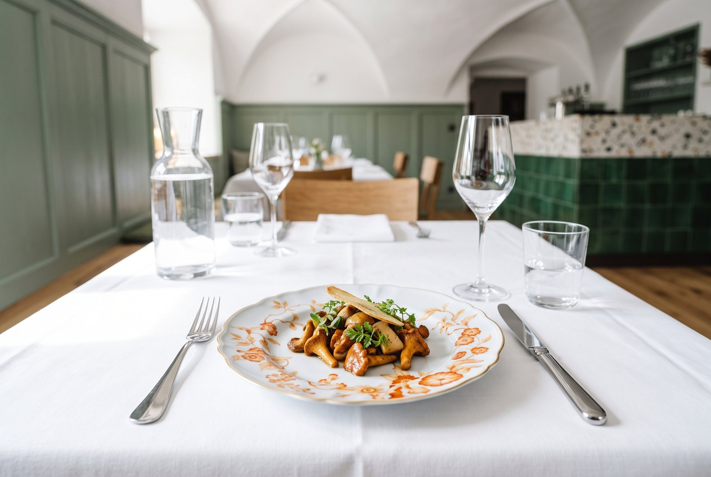
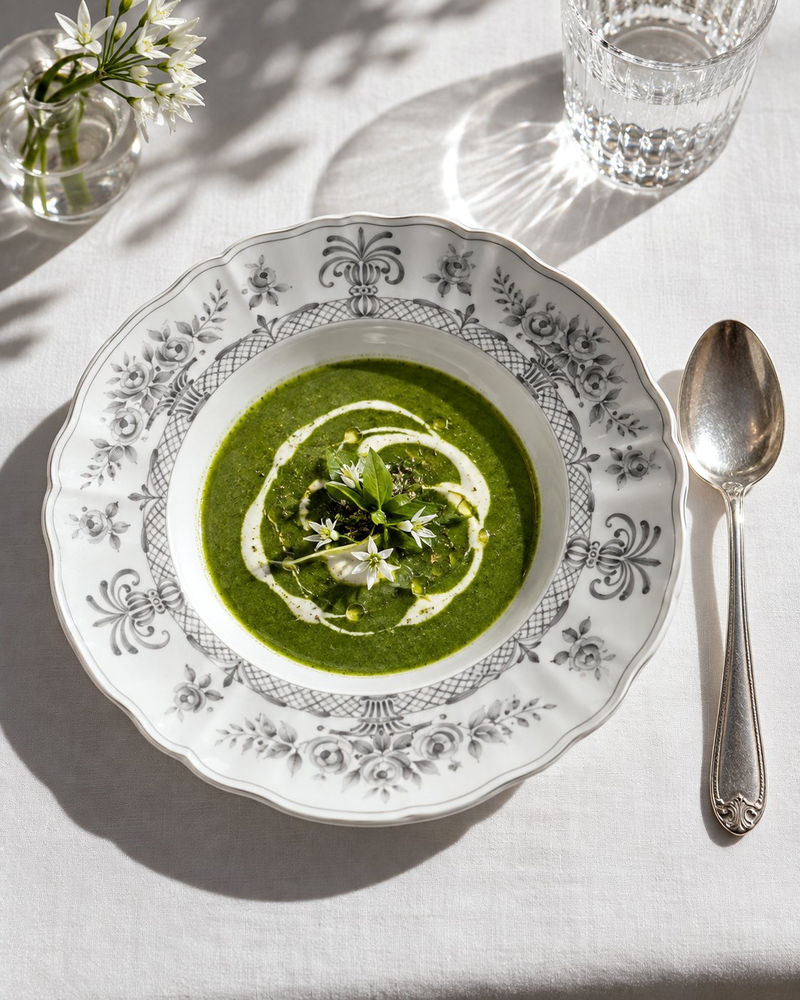
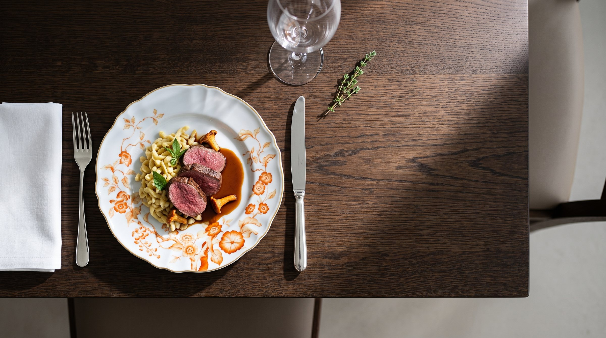
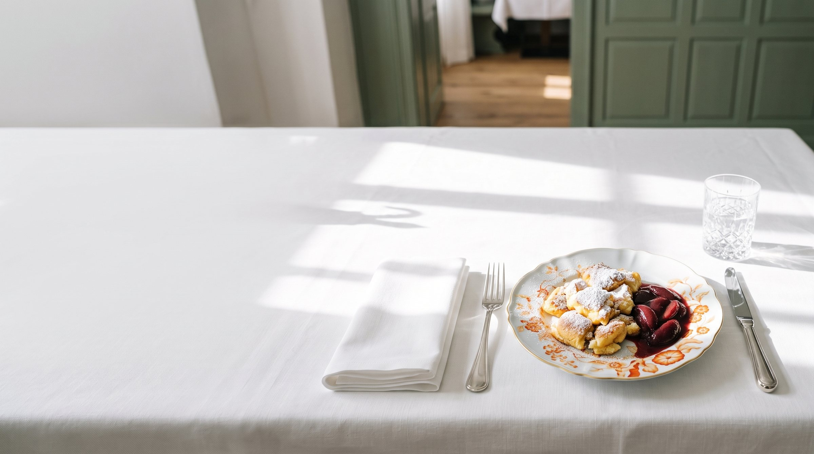
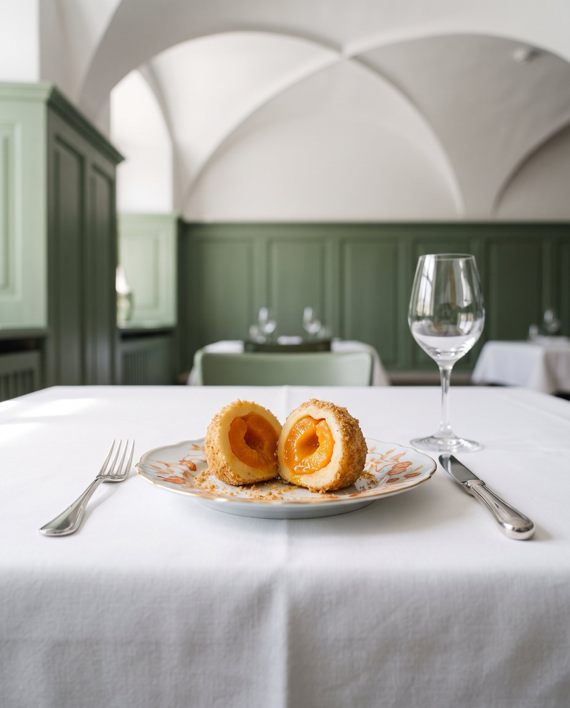
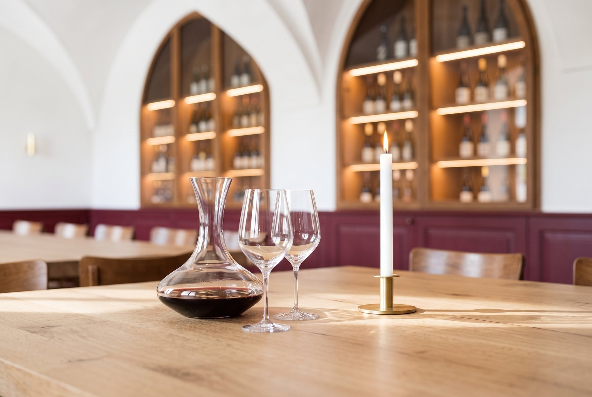

Karte
Die Wochenkarte.
Jede Woche neu, nach Markt und Jahreszeit.

Beispiel: So kann eine Woche bei uns schmecken. Die echte Wochenkarte mit Preisen gibt es hier zur Eröffnung.

Zum Anfang
- Klare Rindssuppe mit LeberknödelSchnittlauch
- Rindertatar mit Preiselbeerenfrischer Kren, Schwarzbrot
- Eierschwammerl und Steinpilzeauf geröstetem Brot
- Feldsalat mit KürbiskernölSpeck und Croutons

Hauptgerichte
- Kasnocken mit brauner ButterBergkäse, Schnittlauch
- Saibling mit RahmsauceDill und Erdäpfel
- Rehrücken mit SpätzleBlaukraut und Wacholder
- Tafelspitz mit WurzelgemüseApfelkren und Schnittlauchsauce
- Schweinsbraten mit KrusteKnödel und Krautsalat

Zum Schluss
- Kaiserschmarrn mit ZwetschgenrösterPuderzucker
- ApfelstrudelVanillesauce
- MarillenknödelButterbrösel
- Maronicremekandierte Kastanie

Für die Kleinen
- Kleiner KaiserschmarrnApfelmus
- Wiener Schnitzel vom KalbErdäpfelsalat
- KasspatznRöstzwiebeln
Zum Trinken
Wein, Bier und Säfte.
Weine aus unserer Vinothek, frisch gezapftes Bier, Säfte und Limo aus der Region. Fragt einfach nach, wir beraten Euch gern.
Zur Vinothek
Besuch
Wir freuen uns auf Euch.
Adresse
FERUN Alte Post
Kirchplatz 2
83125 Eggstätt
Mitten im Ort, zwischen Chiemsee und der Eggstätter Seenplatte.
Öffnungszeiten
Geben wir hier bekannt, sobald wir aufsperren.